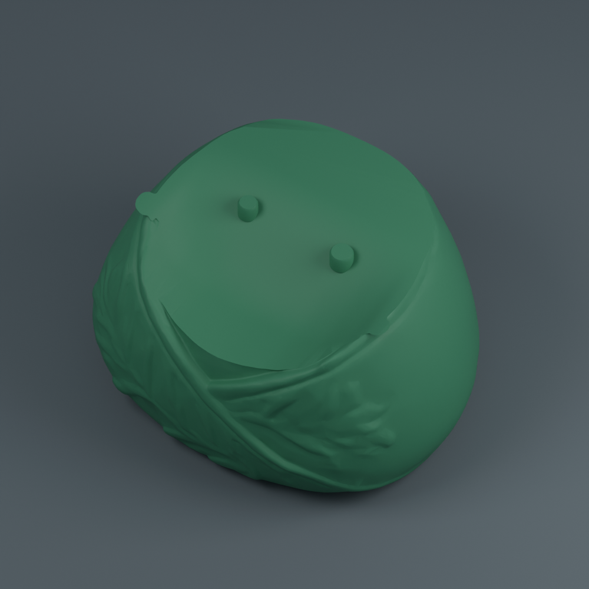
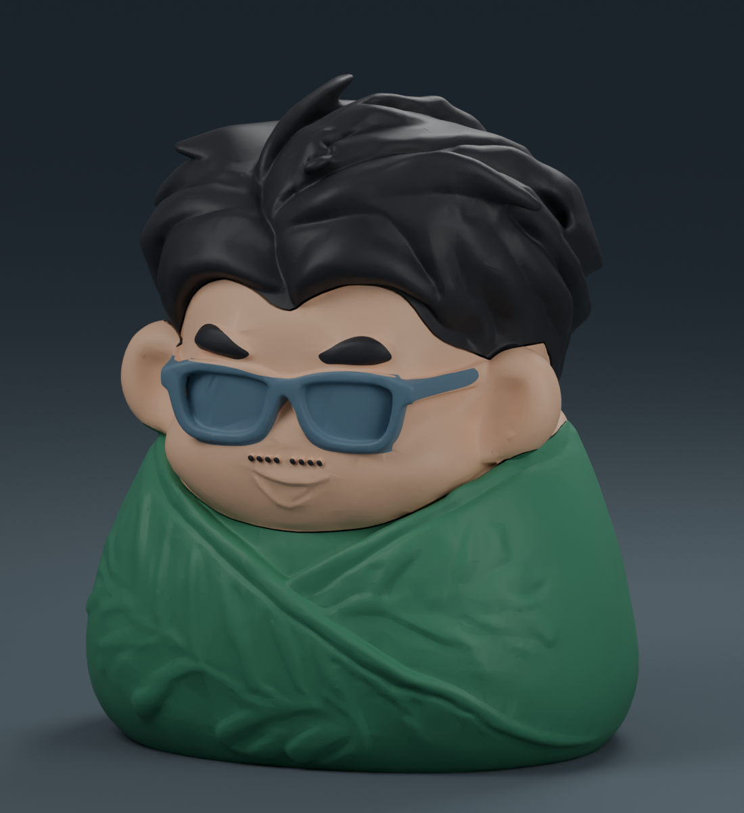
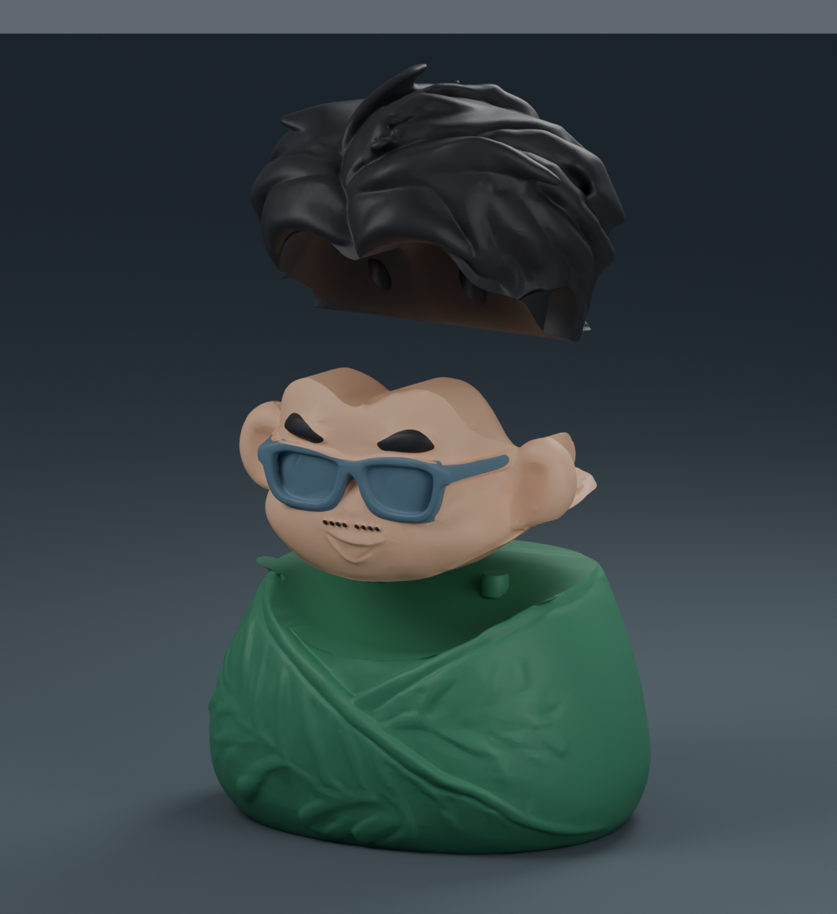
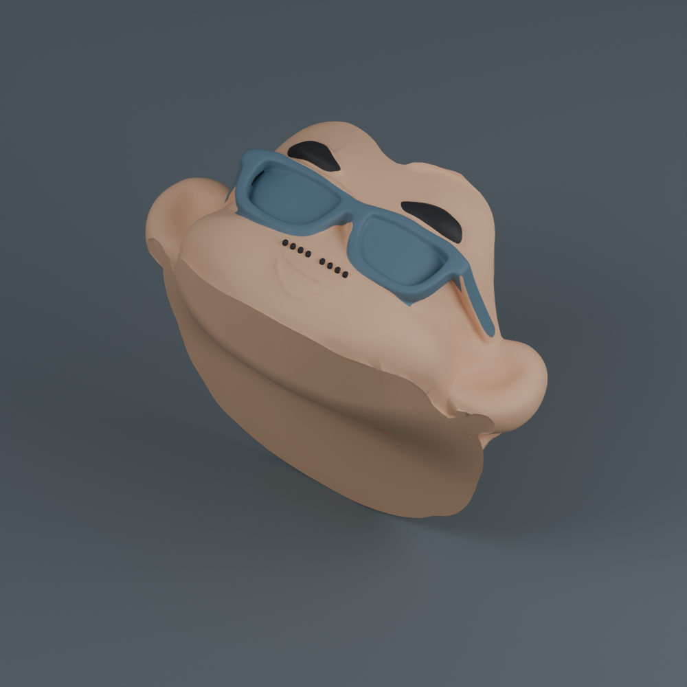
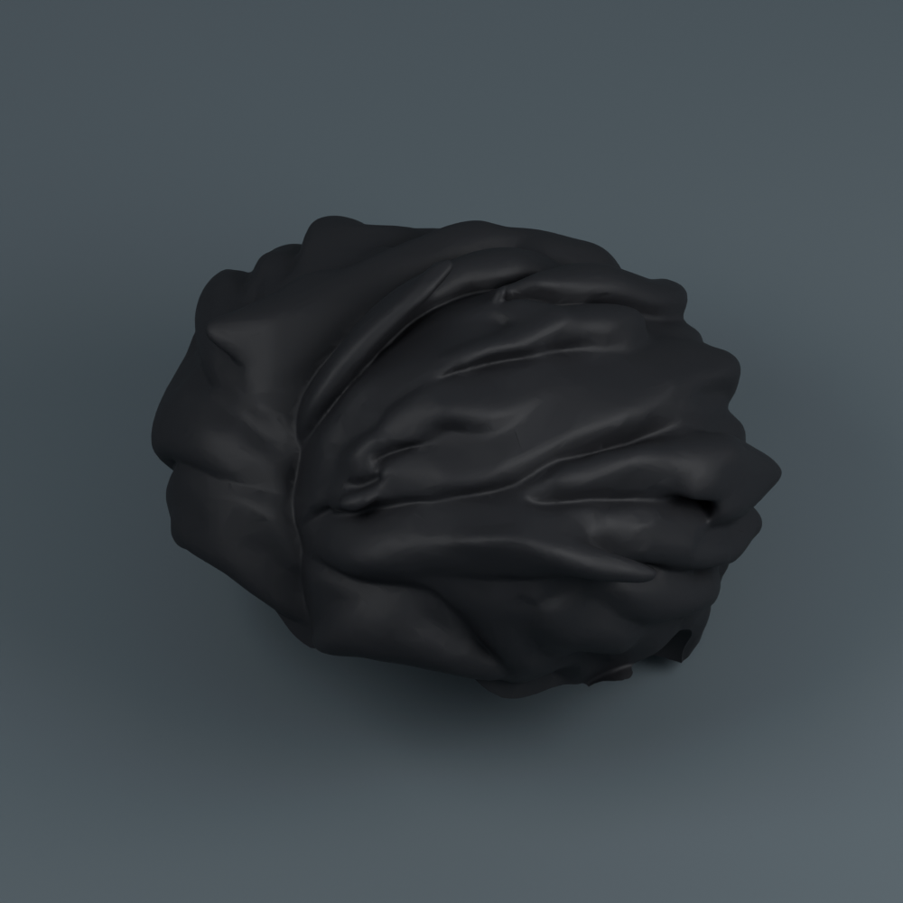

可愛陳晉 · ORIGINAL COLORS / THREE PIECES
原本的顏色，三件組裝。
臉、頭髮、粽子身體。成品高約 10 公分，眼鏡與五官直接和彩色臉印成一件。
綠色粽葉膚色臉黑色頭髮與五官藍灰色眼鏡


只有臉盤需要換色與擦料塔。
粽子身體與頭髮各自單色列印；臉盤使用三色一起列印，需要 AMS／相容的多色列印設備。眼鏡、眉毛與小鬍子都連在臉上，不用黏小配件。
三個檔案，分三盤列印
每次以「專案」開啟一份 3MF，保留排好的方向。臉部正面朝上，三個材料區保留在同一物件中，請勿拆散排盤。


三盤總計約 13 小時 24 分 · 213.33 g
X1 Carbon／0.4 mm 噴嘴／PLA／0.16 mm 層高。包含支撐、底邊、清料、擦料塔與起始流程；不含換盤、冷卻、清理與組裝。這是恢復多色後的新估計。
臉盤約 133 次中途換色。清料量沿用保守範例設定；實際耗材、機型與設定不同，時間會改變。
顏色對應
臉盤耗材 1＝膚色、2＝黑色、3＝藍灰色；身體盤＝綠色、頭髮盤＝黑色。列印時依顏色配對自己的線材，專案編號不等於固定的 AMS 槽位。各區顏色仍可自行調整。
組裝方式
- 待零件冷卻，拆除支撐及底邊，清乾淨定位榫與孔內殘料。
- 臉底部的孔對準粽子身體上的兩根榫，由上向下放入。
- 頭髮底部的孔對準臉背面的兩根榫，由上向下放入。
- 先乾式試裝；確認鬆緊合適後拆開，在接點少量點膠固定。
單邊間隙 0.25 mm，採用點膠固定的定位榫。尚未實體試印，有毛刺先輕磨，不要強壓。
驗證結果
三盤均成功切片，材料分區與耗材配置已確認。臉部各色共同組成一個閉合實體，原三件版外形與定位榫保留。示意圖直接使用本次模型；擺放圖未顯示自動支撐與擦料塔。
切片器保留床溫提示 1000C001，範例沿用 PLA／紋理 PEI 55°C，請依自己的機型與耗材設定處理。3MF 為可編輯模型，不含綁定 G-code，未傳送列印工作。